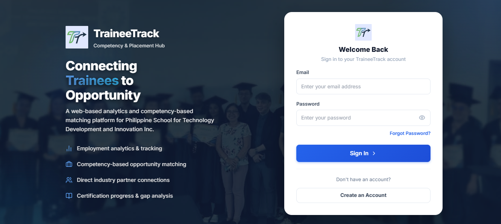
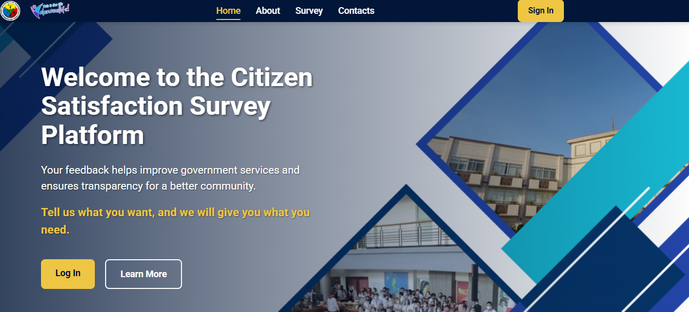
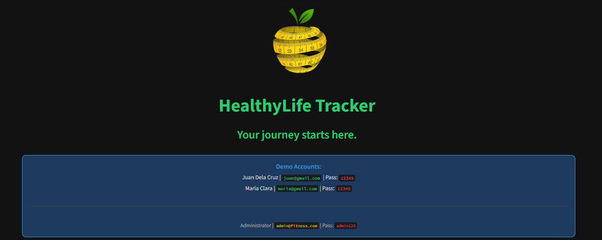

TraineeTrack System
This is our ongoing capstone project, which has already passed its Capstone 1 defense. I serve as the QA Tester and Documentation Lead for the system.
Featured Work
Below is a curated selection of my academic work, demonstrating technical proficiency, quality assurance, and system development.

This is our ongoing capstone project, which has already passed its Capstone 1 defense. I serve as the QA Tester and Documentation Lead for the system.

I served as the Documentation Lead and QA Tester for this system, which was our final project in CC106 – Application Development and Emerging Technology. The system is designed to efficiently collect, manage, and analyze citizen survey data to help improve public service delivery.

I served as the Documentation Lead and QA Tester for this system, which was our final project in PF102 – Event Driven Programming. The system is designed to help users monitor their daily health metrics and support a balanced lifestyle through a simple and user-friendly interface.

I served as the developer for this project, which was our final requirement in WS101 – Web Systems and Technology. It is mainly an informational website, but it also includes a functional backend for ordering and management. The platform is an online motor shop focused on selling motor equipment and related products.
A 2D top-down action-adventure final project for Object-Oriented Programming developed in Java using custom assets, where I also served as the Game Tester and Documentation Lead. Discover the gameplay overview and experience this unique gaming project.

Barikada Tower Defense is a strategic spin-off of the original Barikada card-battle game. While the main title centers on tactical deck-building inspired by Filipino history and folklore, this version reimagines those same elements into a fast-paced tower defense strategy experience.

Accord is an immersive, choice-driven interactive narrative inspired by the suspenseful themes of slasher films. The gameplay revolves around high-stakes moral decisions, where each choice influences the unfolding story and determines the fate of the characters. With a distinct stylized look that blends cinematic visuals and retro-inspired interface elements, Accord challenges players to uncover secrets and navigate conflicts while balancing loyalty, truth, and the consequences of their actions.
An e-commerce UI design prototype created using Figma. This project was developed to explore user-centered layout principles, emphasizing intuitive navigation, clean visual design, and interactive elements to demonstrate effective human-computer interaction concepts.